American Wigeon — DRAKE PHOTO · amwi.jpg
Department of the Interior. U.S. Fish and Wildlife Service. National Conservation Training Center. 10/1997-8888 · Public domain · source
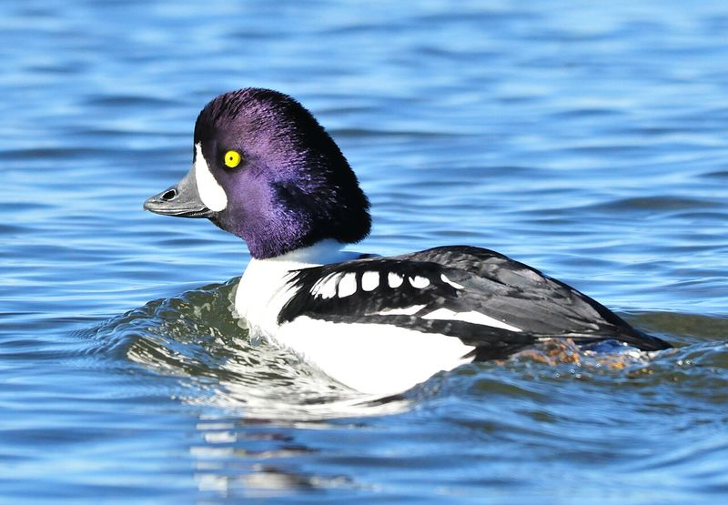
Barrow's Goldeneye — DRAKE PHOTO · bago.jpg
USFWS Mountain-Prairie · Public domain · source
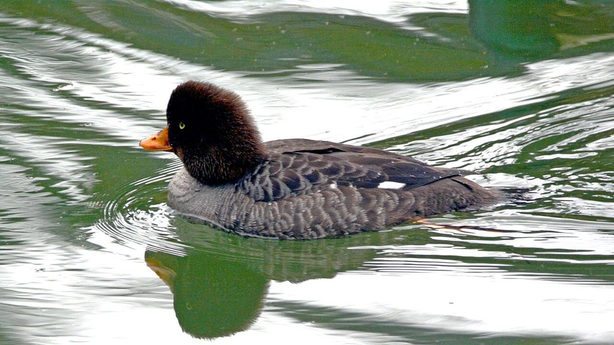
Barrow's Goldeneye — HEN PHOTO · bago_hen.jpg
Forest Service Photography · Public domain · source

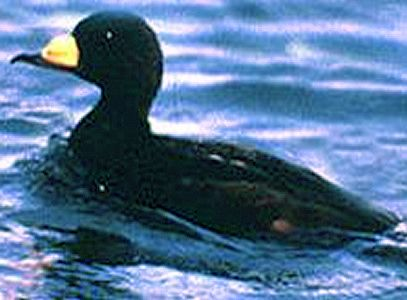
Black Scoter — DRAKE PHOTO · blsc.jpg
U.S. Fish & Wildlife Service, Alaska Region · Public domain · source
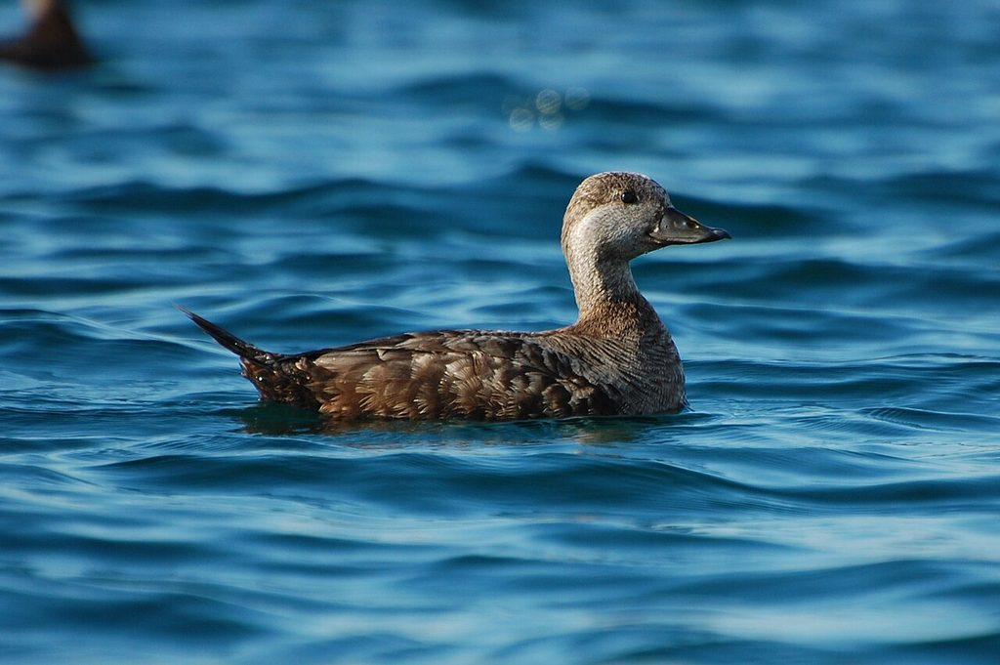
Black Scoter — HEN PHOTO · blsc_hen.jpg
Alaska Region U.S. Fish & Wildlife Service from Anchorage, United States · Public domain · source
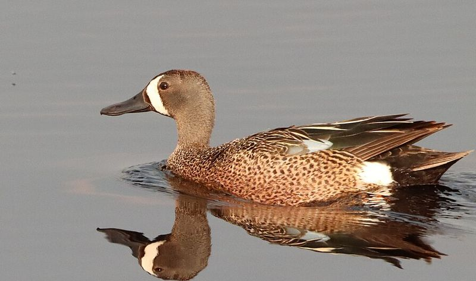
Blue-winged Teal — DRAKE PHOTO · bwte.jpg
Bernard DUPONT from FRANCE · CC BY-SA 2.0 · source


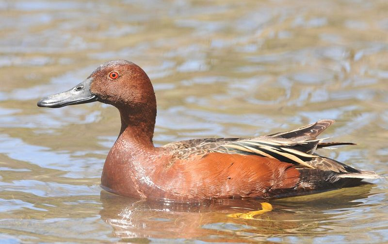
Cinnamon Teal — DRAKE PHOTO · cite.jpg
USFWS Mountain Prairie · Public domain · source
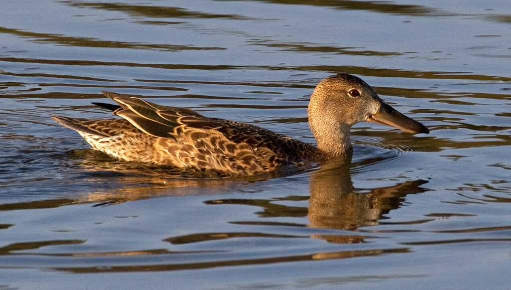
Cinnamon Teal — HEN PHOTO · cite_hen.jpg
Tony Hisgett from Birmingham, UK · CC BY 2.0 · source


Common Merganser — DRAKE PHOTO · come.jpg
Pacific Southwest Region USFWS from Sacramento, US · Public domain · source


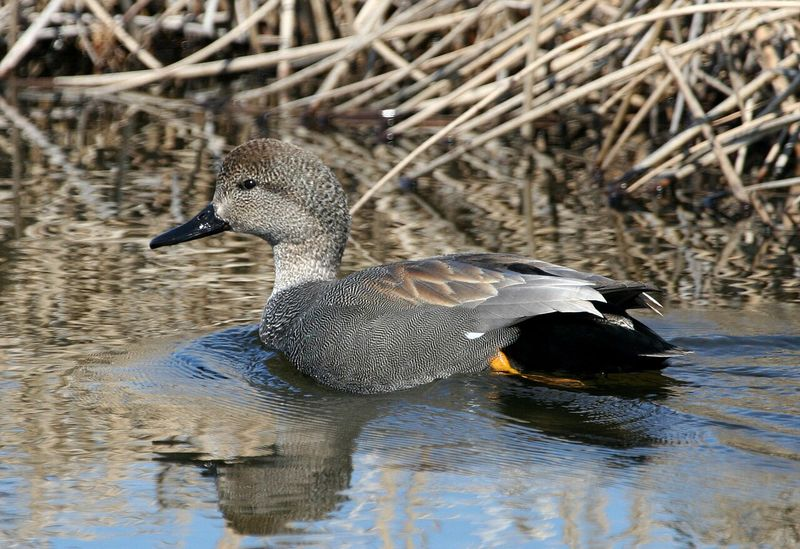
Gadwall — DRAKE PHOTO · gadw.jpg
Department of the Interior. U.S. Fish and Wildlife Service. National Conservation Training Center. 10/1997-8888 · Public domain · source

Greater Scaup — DRAKE PHOTO · grsc.jpg
Department of the Interior. U.S. Fish and Wildlife Service. National Conservation Training Center. 10/1997-8888 · Public domain · source
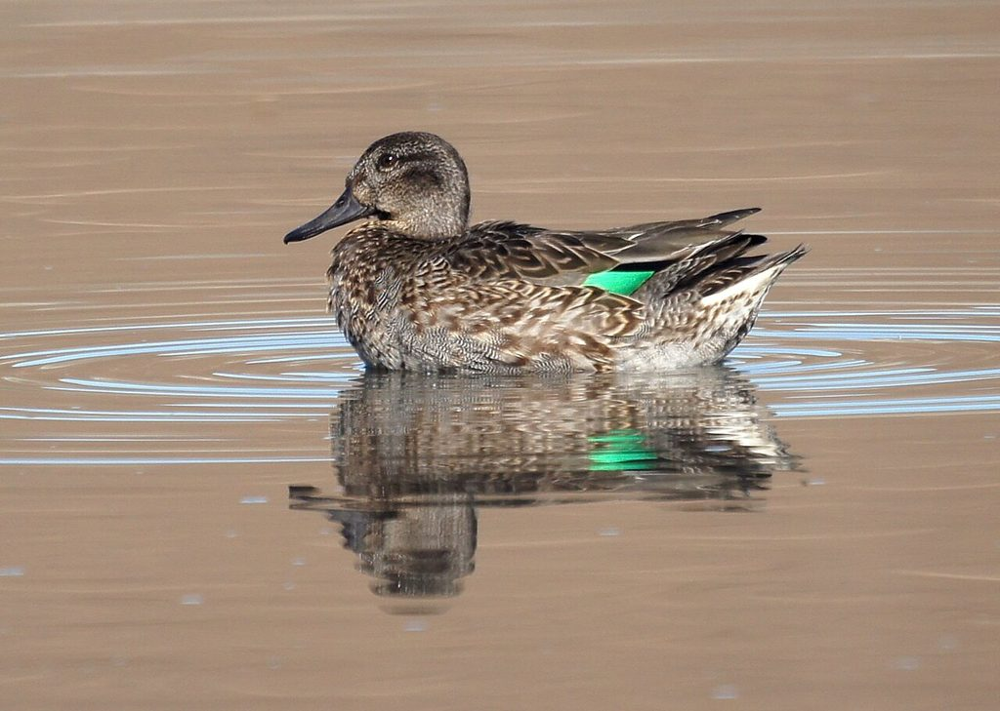
Green-winged Teal — HEN PHOTO · gwte_hen.jpg
Mike's Birds from Riverside, CA, US · CC BY-SA 2.0 · source
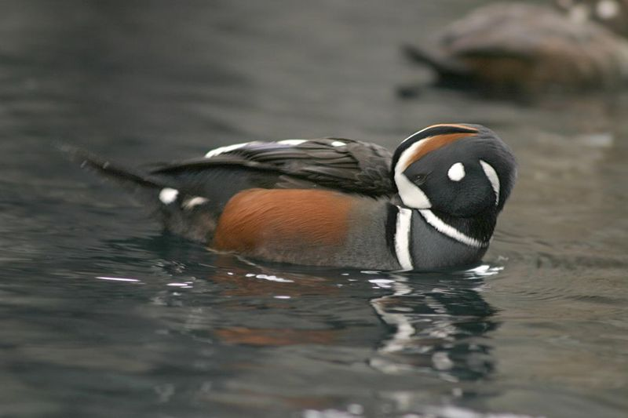
Harlequin Duck — DRAKE PHOTO · hadu.jpg
Department of the Interior. U.S. Fish and Wildlife Service. National Conservation Training Center. 10/1997-8888 · Public domain · source

Hooded Merganser — DRAKE PHOTO · home.jpg
U.S. Fish and Wildlife Service Southeast Region · Public domain · source
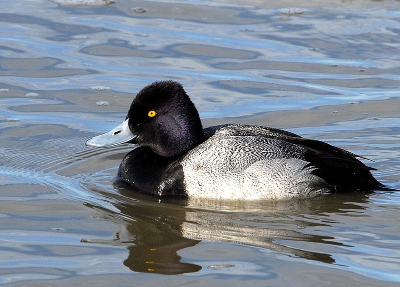
Lesser Scaup — DRAKE PHOTO · lesc.jpg
Pacific Southwest Region USFWS from Sacramento, US · Public domain · source
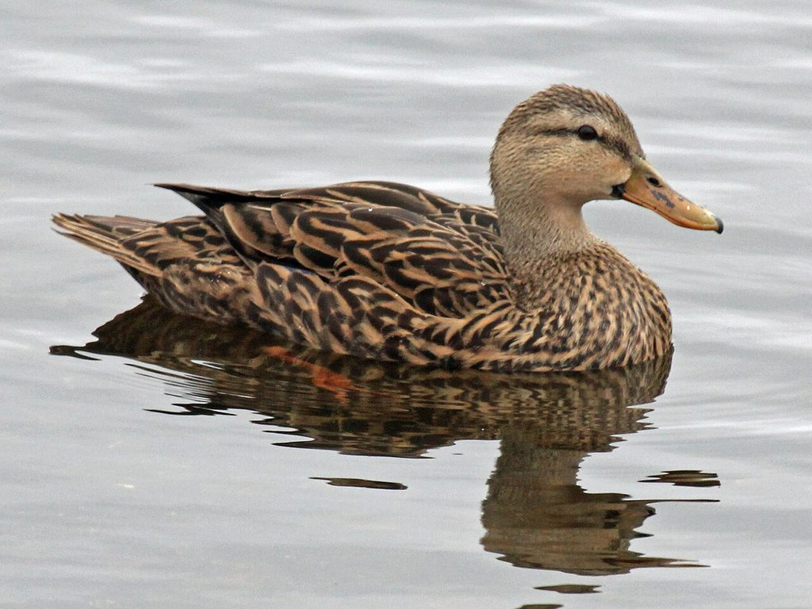
Mottled Duck — HEN PHOTO · modu_hen.jpg
DickDaniels (https://theworldbirds.org/) · CC BY-SA 3.0 · source
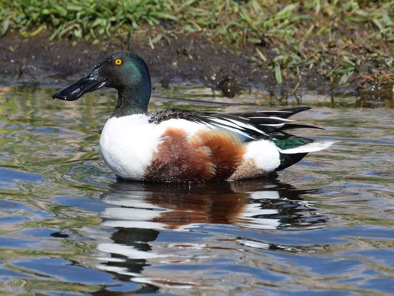
Northern Shoveler — DRAKE PHOTO · nsho.jpg
USFWS Mountain Prairie · Public domain · source
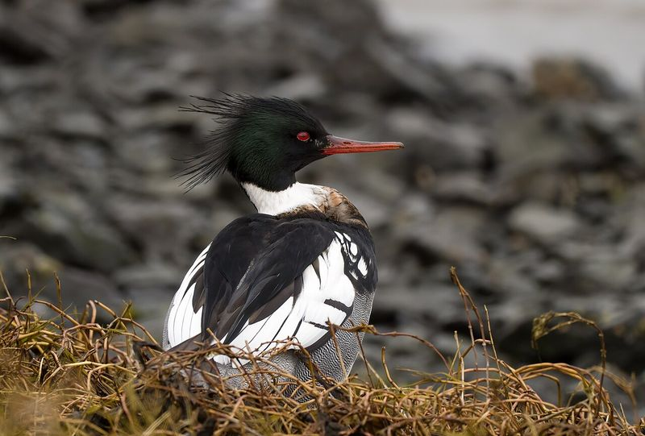
Red-breasted Merganser — DRAKE PHOTO · rbme.jpg
USFWS Pacific · Public domain · source
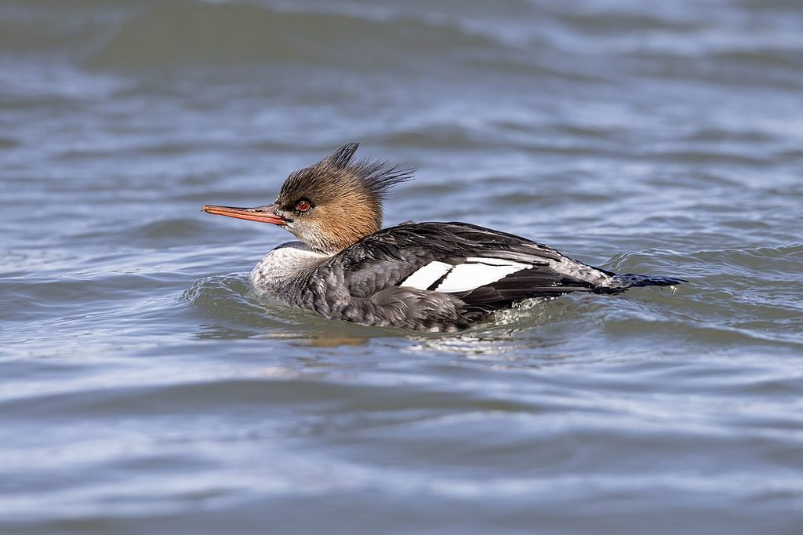
Red-breasted Merganser — HEN PHOTO · rbme_hen.jpg
Chuck Homler d/b/a Focus On Wildlife · CC BY-SA 4.0 · source


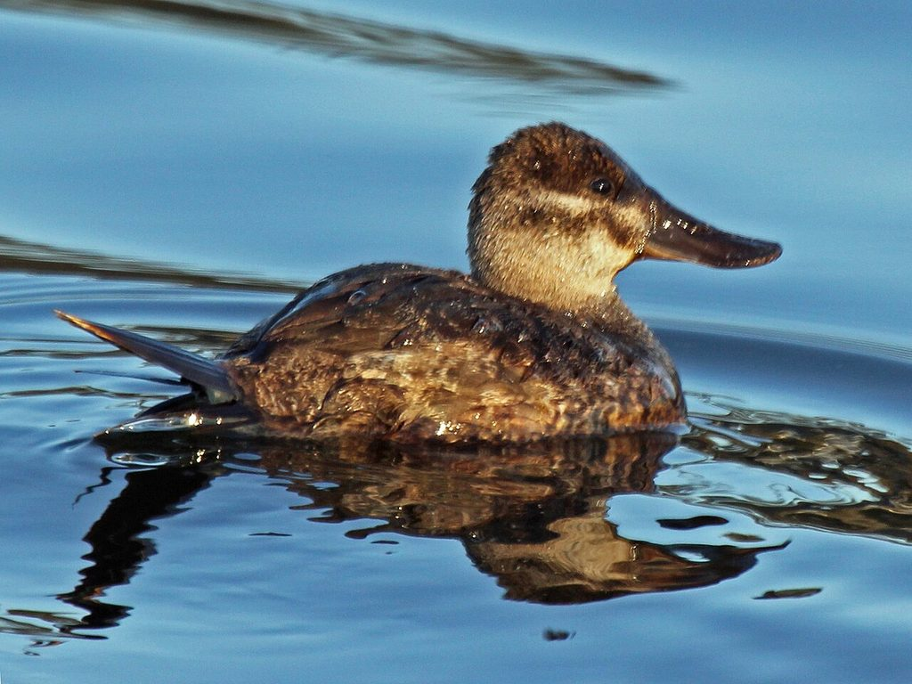
Ruddy Duck — HEN PHOTO · rudu_hen.jpg
DickDaniels (http://carolinabirds.org/) · CC BY-SA 3.0 · source
Snow Goose PHOTO · sngo.jpg
Hobbyfotowiki · CC0 · source

Surf Scoter — HEN PHOTO · susc_hen.jpg
Mike's Birds from Riverside, CA, US · CC BY-SA 2.0 · source
Wood Duck — DRAKE PHOTO · wodu.jpg
ALAN SCHMIERER · CC0 · source
Wood Duck — HEN PHOTO · wodu_hen.jpg
Rhododendrites · CC BY-SA 4.0 · source

White-winged Scoter — HEN PHOTO · wwsc_hen.jpg
Mykola Swarnyk · CC BY-SA 3.0 · source